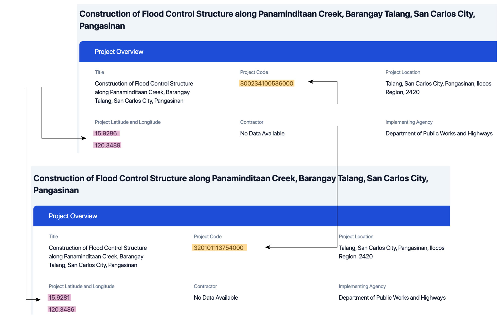

The nuts and bolts of the
controversy surrounding the Philippines' flood control projects are
appearing slowly to the public through the legislative inquiry. But
the truth is it is extremely difficult to get a clear sense of how big
the problem is because government budgeting is complex.
That said, there are ways to at least get close to an answer. The Data
Dictionary decided to focus into one: duplication of projects. An
analysis of available government data showed the likelihood that 23
flood control projects already completed in previous three years were
still allotted budget under the 2026 proposed outlay of the Marcos
administration.
The projects had a cumulative cost of about P1.35 billion when they
were completed in various years. For 2026, they were budgeted about
P1.53 billion.
Comparing the proposed budgets with past project costs of similarly
named projects
23 flood control projects
Source: Data Dictionary analysis of DPWH and DIME data
Being conservative with our analysis
We say “likelihood” because of the limitations of our analysis.
We matched the names of the flood control projects included in the
proposed 2026 outlay with data from the
Digital Information for Monitoring and Evaluation or DIME
as well as the
DPWH contracts
and bid bulletins. Whenever possible, we also cross-checked
coordinates of projects in DIME. We included the page numbers in the
budget where we found these projects. All are public documents and
our analysis and data are available on a
GitHub repository.
We kept our analysis conservative and took into consideration many
possible scenarios such as projects with similar names, but at
different locations, projects that could be done in phases and
therefore budgeted separately, and projects funded in 2025 but have
not completed to date and possible to be financed for 2026. Whenever
any of these scenarios ticked, we crossed the project off the list.
We also considered the budget process. Typically, signing contracts
can only happen as soon as the budget is enacted into law. That
means that some projects listed in the 2026 proposed budget may be
totally new, have a similar name, and not yet bid out. To help
bridge this, we looked for bid bulletins in the DPWH website, which
would indicate that the agency is bidding out for a project planned
for 2026, and therefore has a valid reason to budget for it.
Beyond the data however, we lacked resources to reach out to people,
particularly district engineering offices, to seek clarification on
these projects. We did talk with the budget department and their
inputs are below.
Even after taking all these steps, our analysis showed 23 completed
flood control projects in 2023 and 2024 with proposed budgets for
2026. Five projects were in Metro Manila, five in Central Luzon,
three in Caraga, two each in Calabarzon, Negros Island Region,
Central Visayas, Western Visayas and Davao Region and one in
Soccsksargen.
As mentioned, there is complexity on examining infrastructure
project data. In our analysis, we noticed numerous cases of
different projects having the same names, and were implemented in
various years under different contractors. One example of this was
the construction of flood control structure in Talolong River,
Lopez, Quezon, which appeared three times in DIME for years 2022,
2024 and 2025. The projects for 2022 and 2024 were marked
"completed," while that for 2025 was marked "not yet started."
The completed projects checked out in the DPWH contracts. For the
2025 project, DPWH had it at about 31% completion rate, and the
contract for the project ends in April 2026. The project is budgeted
P35 million for 2026.
Projects with similar names
Source: Department of Public Works and Highways
We noticed that it was common for a project to be marked “not yet
started” in DIME, but “ongoing” with the DPWH. We think this is okay
as DIME has just been reactivated and probably suffering birth pains
so whenever this happened, we removed the project off the list.
The projects' location is a good metric to check whether projects
are indeed duplicated or just of the same name and built in separate
areas or coordinates. For example, our analysis showed two flood
control structures building along Panaminditaan Creek in Barangay
Talang, San Carlos City in Pangasinan, worth P50 million each. These
two structures are under two different DPWH contracts for 2025, but
are located meters away from each other, according to DIME. We
removed this project from our list of duplicates.
Same names, different locations

Same project name,
different locations
Source: Department of Public Works and Highways
What we really want out of this
We would caution against drawing broad conclusions from this. Rather,
we would take these findings as a first step toward a deeper
analysis. That is why we are making public our complete dataset and
analysis – including a CSV version of the list of DPWH flood control
projects, which is in PDF in the budget department website.
If anything, what this entire process taught us was an issue of
transparency in the projects. It is extremely difficult to track
projects with similar names across years, without any locational
information. More project information should be included in the
budget. The project list attached to the budget is also inaccessible
on PDF and should be available in other formats.
When we asked the Department of Budget and Management (DBM) if they
have other information about the projects, they said the information
should be available with the DPWH. "DBM does not interfere with how
DPWH allocates its approved budget under the NEP. Given DPWH's
technical expertise, it is expected to assess the viability of
projects, determine specific cost items, and ensure proper costing
in accordance with its internal guidelines."
As far as duplicates are concerned however, DBM said it "reviews the
lists for multiple entries, typographical errors and clerical
mistakes" and return the proposed budget when it found some.
To date, the DPWH is undertaking a review of its 2026 proposed
budget and President Ferdinand Marcos Jr. had said no flood control
projects will be funded next year.
The table below lists down the 23 likely duplicated projects we found.
Notes
Project names on the table were shortened to remove "Construction
of" to avoid redundancy. A repository containing the data, code
and analysis we used is available
here.
Source
Department of Public Works and Highways, Department of Budget and
Management
Copyright 2025 - The
Data Dictionary
Project